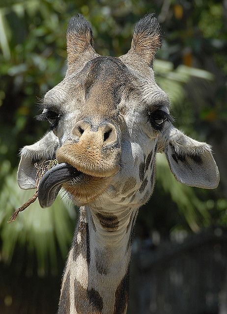

This gal is Eunice
She hates vuvuzelas, but likes smooth jazz.

This is Earl
He's a fan of gummy bears and rock-and-roll music.
Welcome to the Epicodus Animal Shelter, where we partner you with the best that nature has to offer.

This is Betsy
She loves air guitar and french vanilla ice cream.
This gal is Eunice
She hates vuvuzelas, but likes smooth jazz.
This is Earl
He's a fan of gummy bears and rock-and-roll music.